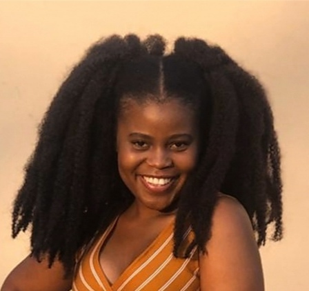

.png)
Who is Kamogelo?
I am Kamogelo Bongiwe Modibedi. I was born and bred in Soweto. I am 23 years old. I speak three languages fluently and would like to learn to speak many more languages fluently. I have proven to a curious, observant and goal-orientated individual, I like trying new methods to get things done. I enjoy problem-solving and like to test boundaries with my solutions. I have a passion for an inclusive education, especially in Mathematics education in the South African context. I would like to br an agent of change by bridging the gap between the South African education system and the global technological progression.
In my spare time, I enjoy reading, listening to all types of music, trying out new food and exploring the hidden gems of the greater Johannesburg. I have aspirations to expand exploration of places and see as many loactions in my beautiful home country and the world at large. I would like experience cultures that I have read about and even more of those that I am yet to discover. I would like to experience various cuisines in their native lands and understand their heritage at a new level.
|  |
Professional background & aspirationsI am an Education student who is yet to complete her degree. I specialise in Inclusive Education and Mathematics Education at a high school level. I various certifications that I started due to my curiosity and desire to be as versatile in my professional roles as possible. I have private tutoring experience, assessment curation experience. This is my first official coding project. I have been self-studying and trying to conceptualise the programming language, although I have no experience in applying them in a practically. I plan on changing this in the near future by taking on some developmental projects that will test and improve my abilities as I also grow in accordance to the curriculum standards of the Codetribe Academy. |
I would like to develop my software development skills and break into the Information Technology industry to develop systems that will not only benefit the corporate world, but also help in solving problems that we face in our immediate communities and the global community as a whole. I would like to see this vision come to frution in the education of the young members of our society by helping them learn in the most beneficial conditions for each child while keeping up with the developments of the Fourth Industrial Revolution, as this will place them in a position to actively participate in the rapidly changing society and not suffer being victims of misinformation and inability to access the resources for them to keep up with their global peers.